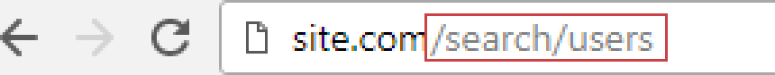
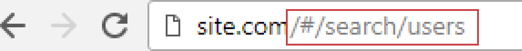
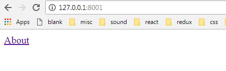
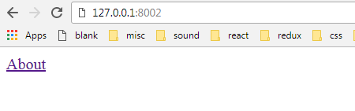

history.push('/start');
What is a Router?
Why do we need it?
In Web Development
Routing is a process of matching of a URL to a View
In Single Page Applications (SPAs)
View is a set of components being rendered
Router dynamically loads components and changes what's displayed in the Browser as user navigates the page.
P. S. Without reloading the page
P. P. S. Because it's SPA
React isn't a framework, it's a library.
Therefore, it doesn't solve all the application's needs.
It does a great job at creating components and managing state, but creating a more complex SPA requires additional libraries.
React Router is an external library that manages navigation and rendering of components in the React applications
First thing to check when looking for a documentation,
an article or a solution at StackOverflow,
it that it is about React Router v4+.
https://reacttraining.com/react-router/core/guides/philosophy
React Router is not included in React by default,
so you need to install it on top of React itself:
npm install --save react
npm install --save react-dom
npm install --save react-router-domIt's not even included in Create React App by default:
npm install -g create-react-app
create-react-app my-app
cd my-app
npm install --save react-router-domThere are three types of components in React Router:
BrowserRouter

import { BrowserRouter } from 'react-router-dom';HashRouter

import { HashRouter } from 'react-router-dom';BrowserRouter requires a default SPA route to be configured on Server.
Otherwise here's what's happening:
Default SPA route on Express server
const express = require('express');
const path = require('path');
const app = express();
app.use(express.static(path.join(__dirname, '../dist')));
app.get('*', (req, res) => { // SPA default route
res.sendFile(path.join(__dirname, '../dist/index.html'));
});
app.listen(3000);Default SPA route on Webpack Dev Server
const path = require('path');
module.exports = {
devServer: {
inline: true,
contentBase: './',
historyApiFallback: { // SPA default route
index: 'index.html'
}
},
};HashRouter is the fallback in case
there is no control of Server side or static HTML.
Like GitHub Pages for example.
Or this presentation.
HashRouter on Static Server
Importing a Router component:
import { BrowserRouter } from 'react-router-dom';import { HashRouter } from 'react-router-dom';Renaming to Router on import:
import { BrowserRouter as Router } from 'react-router-dom';import { HashRouter as Router } from 'react-router-dom';There are two route matching components:
Importing the Route matching components
import { Route } from 'react-router-dom';import { Route, Switch } from 'react-router-dom';import { BrowserRouter, Route, Switch } from 'react-router-dom';// when location.pathname = '/about'
<Route path='/about' component={About} /> // renders <About/>
<Route path='/contact' component={Contact} /> // renders null
<Route component={Always} /> // renders <Always/>
import React from 'react';
import { render } from 'react-dom';
import { BrowserRouter, Route } from 'react-router-dom';
const Hello = () => (Hello, World!
);
const App = () => (
<BrowserRouter>
<Route path="/" component={Hello} />
</BrowserRouter>
);
render(A <Router> may have only one child element in v4
...
const App = () => (
<BrowserRouter>
<Route path="/" component={Home} />
<Route path="/about" component={About} />
</BrowserRouter>
);
...Uncaught Error: A <Router> may have only one child element
at invariant (browser.js:38)
at Router.componentWillMount (Router.js:73)
at callComponentWillMount (react-dom.development.js:6370)Multiple <Router> children must be wrapped in v4 (they're OK in v5)
...
const App = () => (
<BrowserRouter>
<Route path="/" component={Home} />
<Route path="/about" component={About} />
</BrowserRouter>
);
......
const App = () => (
<BrowserRouter>
<Route path="/" component={Home} />
<Route path="/about" component={About} />
</BrowserRouter>
);
......
const App = () => (
<BrowserRouter>
<Route exact path="/" component={Home} />
<Route path="/about" component={About} />
</BrowserRouter>
);
...const App = () => (
<BrowserRouter>
<header>
<Route path="/user" component={UserMenu} />
</header>
<main>
<Route exact path="/" component={Home} />
<Route path="/user" component={UserContent} />
</main>
</BrowserRouter>
);import { BrowserRouter, Route, Switch } from 'react-router-dom';
const App = () => (
<BrowserRouter>
<Switch>
<Route path="/users/add" component={UsersAdd} />
<Route path="/users" component={Users} />
<Route path="/" component={Home} />
</Switch>
</BrowserRouter>
);// Instead of this
<Switch>
<Route path="/user" component={User} />
<Route path="/profile" component={User} />
</Switch>// You can use an array in v5
<Route path={['/user', '/profile']} component={User} /><Link> component is used to create links in your application
<Link to='/'>Home</Link>When a <Link> is rendered, an <a> will be rendered in HTML
HomeNow we are ready to revisit our BrowserRouter & HashRouter friends!
<Link> to object
<Link to={{
pathname: '/about', // A string representing the path to link to
search: '?what=company', // A string represenation of query parameters
hash: '#sub-section', // A hash to put in the URL
state: { fromHome: true } // State to persist to the location
}}>
Home
</Link><Link replace>
When true, clicking the link will replace the current entry in the history stack instead of adding a new one.
<Link to='/about' replace>Home</Link><NavLink> is a special type of <Link> that can style itself as “active” when its to prop matches the current location
// when location.pathname = '/about'
<NavLink to="/about">About</NavLink> // 'active' class is added by default
<NavLink to="/about" activeClassName="special">About</NavLink>
<NavLink to="/about" activeStyle={{
fontWeight: bold,
color: orange
}}>About</NavLink><NavLink> analyses its current location, just like <Route> does.
Thus the same caveats:
<Switch>
<Route exact path="/" component={Home} />
<Route path="/about" component={About} />
<Route path="/contacts" component={Contacts} />
</Switch><NavLink exact> and <NavLink strict>
<NavLink exact to="/">Home</NavLink>
<Route exact to="/">Home</NavLink><NavLink strict to="/about/">About</NavLink>
<Route strict to="/about/">About</NavLink>When <Redirect> is rendered it navigates to a new location.
Current location is replaced in the history stack (replace by default)
<Redirect to="/about" /><Redirect to={{
pathname: '/login',
search: '?utm=your+face',
state: { from: currentLocation }
}}><Redirect from> within a Switch
<Switch>
<Route path="/new" component={New} />
<Redirect from="/old" to="/new">
</Switch><Redirect exact> and <Redirect strict>
<Switch>
<Route path="/new" component={New} />
<Redirect exact strict from="/old/path/" to="/new">
</Switch>Override the default repalce
<Redirect push to="/about">About</Redirect>There are 3 ways to render something with a <Route>:
P.S. You'll have to choose
All the 3 render methods will be passed the same 3 route props:
object contains information about how a <Route path> matched the URL.
props: {
match: {
path: '/about/:name', // The path pattern used to match.
url: '/about/joe', // The matched portion of the URL.
isExact: true, // true if the entire URL was matched.
params: { // Key/value pairs parsed from the URL,
name: 'joe' // corresponding to the dynamic segments
} // of the path
}
}object contains current location and passed state
props: {
location: {
key: 'ac3df4', // not with HashHistory!
pathname: '/somewhere'
search: '?some=search-string',
hash: '#howdy',
state: {
[userDefined]: true
}
}
}object refers to the history package, which is one of only 2 major dependencies of React Router (besides React itself), and which provides several different implementations for managing session history in JavaScript in various environments:
history: {
length: 10 // The number of entries in the history stack
action: 'PUSH' // The current action (PUSH, REPLACE, or POP)
location: {} // The current location object
push(path, [state]) // Pushes a new entry onto the history stack
replace(path, [state]) // Replaces the current entry on the history stack
go(n) // Moves the pointer in the history stack by n entries
goBack() // Equivalent to go(-1)
goForward() // Equivalent to go(1)
block(prompt) // Prevents navigation (see the history docs)
}<Route component>
<Route path="/user/:username" component={User}/>
const User = ({ match }) => {
return Hello {match.params.username}!
}Custom match parameters
// Set custom match parameters in the Route
<Route path="/:company/:division" component={About}/>
// Access the value in component like so:
About {match.params.division} division of {match.params.company}
path can be any valid URL path that path-to-regexp understands.
https://www.npmjs.com/package/path-to-regexp
Custom match parameters support regexp matches
/optional/:param? // /optional, /optional/foo
/optional/:param* // /optional, /optional/foo/, optional/foo/bar
/optional/:param+ // /optional/foo/, optional/foo/bar
/number/(\d+) // /number/1, 123, 12345
/number/(\d{1,3}) // /number/123
/phone/(\d{3})-(\d{3})-(\d{4}) // /phone/067-123-4567
/date/:iso(\d{4}-\d{2}-\d{2}) // /date/2018-12-31, ISO 8601 format date
/time/:hh(\d{2})::mm(\d{2}) // /time/10:45
/:key/:value(\d+) // /iq/80, /weight/150
<Route render>
// Inline rendering
<Route path="/home" render={() => Home}/>
// Wrapping, passing data
const BooksList = ({ books }) => (
{books.map(book => (- {book.title}
))}
);
const BooksListWithDataPassed = (props) => {
const books = [ { id: 1, title: 'bukvar'}, ... ]; // data
return (<BooksList {...props} books={books} />);
}
<Route path="/books" render={BooksListWithDataPassed} />
<Route children>
// children is rendered always, but when it didn't match, match is null
const RenderMeAnyway = ({ match }) => (
match
? (I matched!)
: (I didn't match, but still rendered)
);
<Route path="/match" children={RenderMeAnyway} />
Protected Route
const Login = () => (You must log in);
const Admin = () => (Welcome to admin zone);
const ProtectedRoute = (props) => (
authService.checkAuth()
? (<Admin {...props} />)
: (<Redirect to="/" />)
);
const App = () => (
<Router>
<Route exact path="/" component={Login} />
<Route path="/admin" render={ProtectedRoute}/>
</Router>
);
Nested Routes
const App = () => (
<Router>
<Route path="/tacos" component={Tacos}/>
</Router>
);
const Tacos = () => (
<Route path="/tacos/carnitas" component={Carnitas} />
);
Nested Routes with match
const App = () => (
<Router>
<Route path="/tacos" component={Tacos}/>
</Router>
);
const Tacos = ({ match }) => (
<Route path={match.url + '/carnitas'} component={Carnitas} />
);
withRouter()
The match, location and history props are only available to the component immediately rendered by Route. In case you need to them in a deeper level component you may either forward them down in props, or use withRouter. withRouter HOC will pass the closest Route's match, location, and history props to the wrapped component whenever it renders.
withRouter()
import React, { Component } from 'react';
import { withRouter } from 'react-router';
class ShowTheLocation extends Component {
render() {
const { match, location, history } = this.props
return (You are now at {location.pathname});
}
}
export default withRouter(ShowTheLocation);
Navigate programmatically
import React, { Component } from 'react';
import { withRouter } from 'react-router-dom';
class UseHistory extends Component {
goAway = () => this.props.history.push('/away');
render() {
return (
<button onClick={this.goAway}>Go Away</button>
);
}
}
export default withRouter(ShowMatchUseHistory);
Transition Animation
import { TransitionGroup, CSSTransition } from "react-transition-group";
<Route
render={({ location }) => (
<TransitionGroup>
<CSSTransition key={location.key} classNames="fade" timeout={5000}>
<Switch location={location}>
<Route path="/" exact component={Home} />
<Route path="/about" component={About} />
</Switch>
</CSSTransition>
</TransitionGroup>
)}
/>
Thank You
Oleksiy Лёша Dubovyk
github.com/dubbha/react-router-lecture
github.com/dubbha/react-router-examples